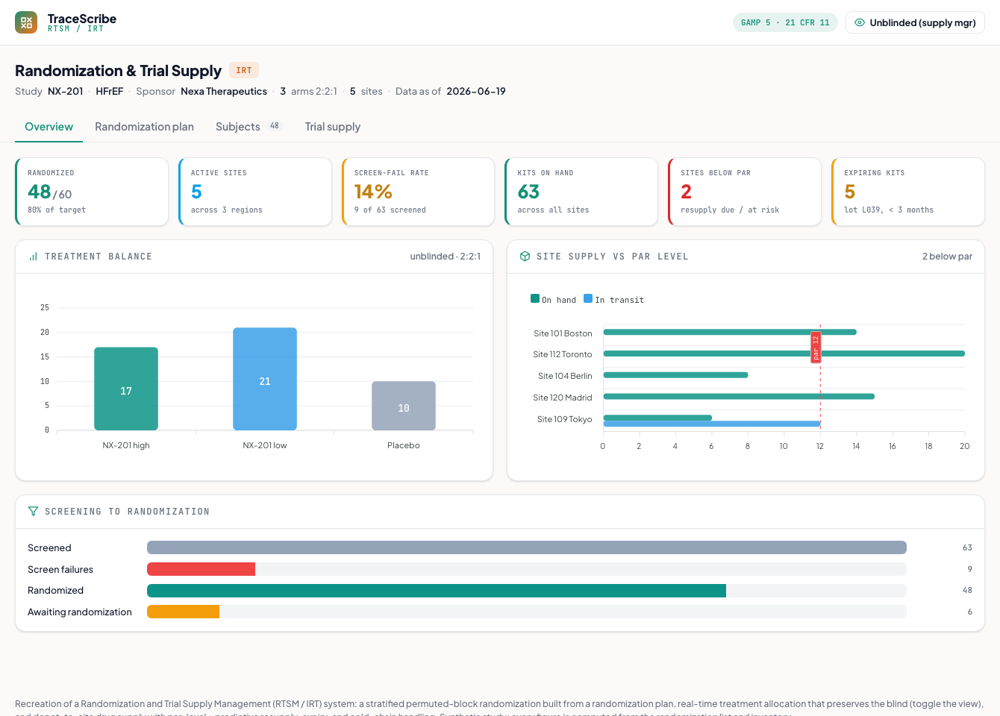

Randomization & Trial Supply
An RTSM / IRT system: stratified permuted-block randomization built from a randomization plan, real-time treatment allocation that preserves the blind, and depot-to-site drug supply with par-level and predictive resupply. Built to GAMP 5 / 21 CFR Part 11 conventions.
What it does
The two jobs of an Interactive Response Technology system: randomize subjects to treatment arms in real time, and manage investigational-product supply across sites and depots, all while keeping the study blinded. It is the validated system that sits between enrollment and dosing.
How it works
- Randomization plan: the controlled specification, allocation ratio (2:2:1), stratified permuted-block method, stratification factors (NYHA class x Region = 6 strata), the block size, and the reproducible random seed, generated by an independent unblinded statistician, with the randomization-list structure and per-stratum balance.
- Interactive randomization: randomize the next screened subject and watch the IRT assign the next allocation from that stratum's block, a randomization number, and a blinded kit, updating the arm balance and the site's inventory.
- Blinding: a view toggle masks every arm to a kit code (the site view) or reveals it (the unblinded supply-manager view). Emergency unblinding is investigator-initiated and written to an audited code-break log.
- Trial supply: site and depot inventory with par-level (min-max) and predictive resupply, expiring-lot and cold-chain quarantine handling, and a drug-accountability reconciliation (Received - Dispensed - Returned - Destroyed = Balance).
A from-scratch recreation grounded in RTSM/IRT practice (stratified permuted blocks per ICH E9, par-level and predictive resupply, GAMP 5 / 21 CFR Part 11). Synthetic study (NX-201); every figure is computed from the randomization list and inventory, and each permuted block is a verified 4:4:2 split.

Static preview - click to open the live, interactive demo